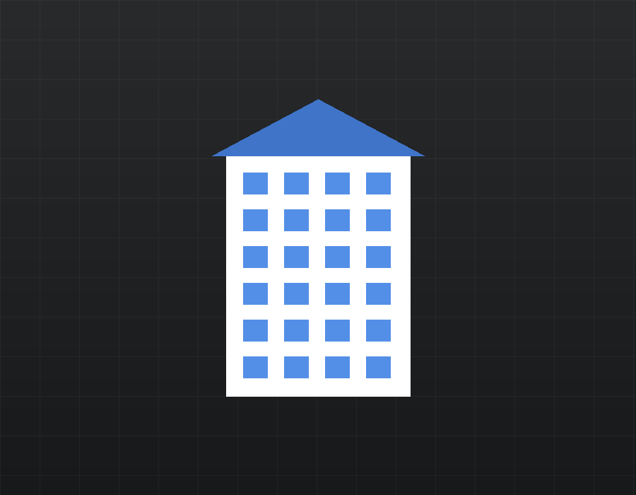
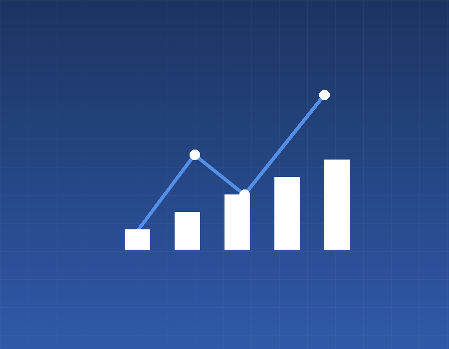
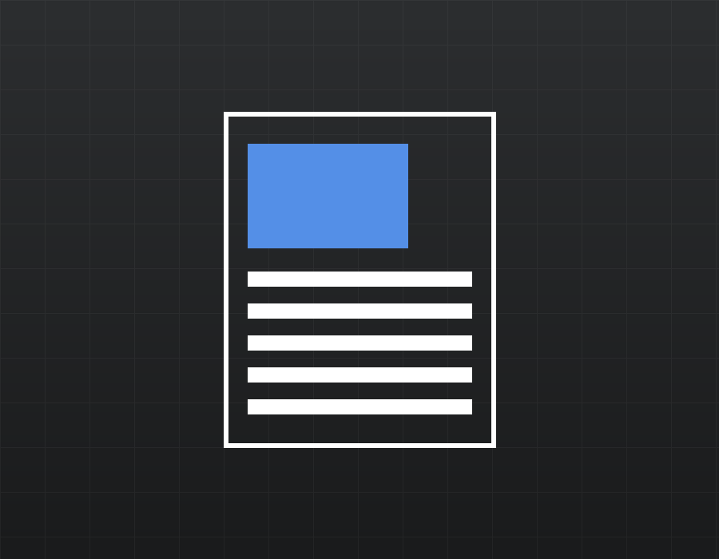

Jaderná elektrárna Dukovany je jedním z klíčových zdrojů výroby elektřiny v České republice. Do provozu byla uvedena v 80. letech a tvoří ji čtyři tlakovodní reaktory typu VVER-440.
Elektrárna pokrývá významnou část domácí spotřeby. Díky stabilní výrobě přispívá k energetické bezpečnosti a nízkouhlíkové produkci elektřiny.
Životní cyklus jaderného zařízení – tedy v krátkosti příprava (investiční, licenční a povolovací), výstavba, uvádění do provozu, provozování a vyřazení z provozu – je skutečně běh na dlouhou trať, který trvá i více než 100 let. Z toho přibližně 20 let je projekt připravován a je ve výstavbě, následujících 60 a více let je provozován a nakonec je vyřazen z provozu.

O společnosti
V návaznosti na závěry a doporučení Národního akčního plánu rozvoje jaderné energetiky založila společnost ČEZ, a. s. v roce 2015 dceřinou společnost Elektrárna Dukovany II, a. s., která je investorem projektu nového jaderného zdroje v lokalitě Dukovany. Vrcholným orgánem je valná hromada, 80 % akcií vlastní Ministerstvo financí ČR a zbylých 20 % společnost ČEZ, a. s.

Budoucnost energetiky
Nové jaderné bloky jsou klíčovým pilířem dlouhodobé energetické strategie České republiky. Stabilní a nízkouhlíková výroba elektřiny pomáhá zajistit energetickou soběstačnost země i v období rostoucí poptávky a odklonu od fosilních paliv.

Aktuality
Fakulta elektrotechniky a komunikačních technologií VUT v Brně uspořádala 15. října první ročník akce PerFEKT ATOM Day, která přilákala stovky studentů se zájmem o jadernou energetiku. Součástí programu byly interaktivní výstava, jaderný kvíz a prezentace průmyslových partnerů včetně Skupiny ČEZ.